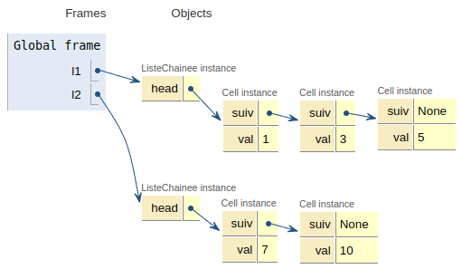
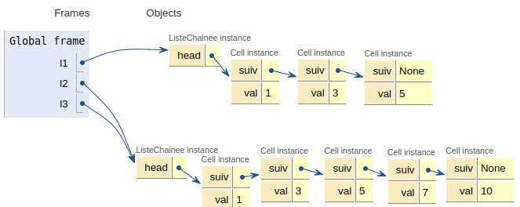

Du type abstrait à la structure de donnée Liste : Exercices⚓︎
L'utilisation de l'éditeur intégré à la page est largement envisageable pour toute solution itérative. L'utilisation de la récursion est ... un peu lente!
On pourrait également choisir de télécharger le script, en utilisant le bouton à cet effet et l'inclure dans un notebook ...
Exercice 1 Insertion / Suppression⚓︎
On reprend la réalisation d'une liste chaînée du cours et on se propose d'ajouter à l'ensemble des opérations, l'insertion et la suppression d'un élément à un index donné.
1 2 3 4 5 6 7 8 9 10 11 12 13 14 15 16 17 18 19 | |
1. Écrire une fonction inserer qui prend pour paramètres un élément x, une position k, une liste chaînée non vide lst et qui va insèrer x à l'index k de la liste lst.
1 2 3 4 5 6 | |
class Cell:bksl-nl """ Une classe pour décrire une cellule (maillon) d'une liste chainée"""bksl-nlbksl-nl def py-undpy-undinitpy-undpy-und(self, v, s):bksl-nl self.cle = vbksl-nl self.suiv = sbksl-nlbksl-nldef estpy-undvide(l):bksl-nl return l is Nonebksl-nlbksl-nldef tete(l):bksl-nl """ Renvoie l'élément de tête de l"""bksl-nl assert l is not None, "tete: erreur liste vide"bksl-nl return l.clebksl-nlbksl-nldef queue(l):bksl-nl """ Renvoie une liste correspondant à la queue de l"""bksl-nl assert not estpy-undvide(l), "queue: erreur liste vide"bksl-nl return l.suivbksl-nlbksl-nl# A compléterbksl-nldef inserer(x, k, lst):bksl-nl """ bksl-nl Insère x à l'index k de la liste lst non vide.bksl-nl Ne renvoie rien: lst est modifié!bksl-nl """bksl-nl passbksl-nlbksl-nldef inserer(x, k, lst):bksl-nl """ Insère x à l'index k de la liste lst non vide.bksl-nl Ne renvoie rien: lst est modifié!bksl-nl """bksl-nl if k == 0: # il s'agit d'une insertion en têtebksl-nl c = Cell(tete(lst), queue(lst))bksl-nl lst.cle = xbksl-nl lst.suiv = cbksl-nl else:bksl-nl ## 1) Initialisation des variables utiles## bksl-nl # compteur pour trouver l'index d'insertionbksl-nl pos = 1 bksl-nl bksl-nl # 2 pointeurs 'precedent' et 'cellpy-undapy-unddecaler'bksl-nl # ---+--------+---+-----+...bksl-nl # | xk-1 | xk| xk+1|...bksl-nl # ---+--------+---+-----+...bksl-nl # ^ ^ bksl-nl # | |bksl-nl #cell. prec cell. à décaler (pour l'insertion)bksl-nl # bksl-nl precedent = lstbksl-nl cellpy-undapy-unddecaler = queue(lst)bksl-nl # Création de la cellule à insérerbksl-nl cellpy-undapy-undinserer = Cell(x, None)bksl-nl bksl-nl # 2) Déplacement des pointeurs jusqu'à trouver l'index kbksl-nl while pos != k:bksl-nl cellpy-undapy-unddecaler = queue(cellpy-undapy-unddecaler)bksl-nl precedent = queue(precedent)bksl-nl pos += 1bksl-nl bksl-nl # On a trouvé la position, on assure maintenant le chaînagebksl-nl precedent.suiv = cellpy-undapy-undinsererbksl-nl cellpy-undapy-undinserer.suiv = cellpy-undapy-unddecalerbksl-nl
A
Commentaires
Le cas d'une insertion en tête est trivial !
Dans le cas d'une insertion à un index quelconque \(k\gt 0\), on doit d'abord créer
deux pointeurs vers les cellules concernées par l'insertion. Ensuite,
dans une boucle, on décale ces pointeurs jusqu'à ce l'on trouve la position
où sera inséré la nouvelle cellule.
Z
2. Écrire une fonction supprimer qui prend en paramètres un index k et une liste lst non vide et qui supprime l'élément d'index k de la liste.
1 2 3 4 5 6 | |
class Cell:bksl-nl """ Une classe pour décrire une cellule (maillon) d'une liste chainée"""bksl-nl bksl-nl def py-undpy-undinitpy-undpy-und(self, v, s):bksl-nl self.cle = vbksl-nl self.suiv = sbksl-nlbksl-nldef estpy-undvide(l):bksl-nl return l is Nonebksl-nlbksl-nldef tete(l):bksl-nl """ Renvoie l'élément de tête de l"""bksl-nl assert l is not None, "tete: erreur liste vide"bksl-nl return l.clebksl-nlbksl-nldef queue(l):bksl-nl """ Renvoie une liste correspondant à la queue de l"""bksl-nl assert not estpy-undvide(l), "queue: erreur liste vide"bksl-nl return l.suivbksl-nlbksl-nlbksl-nldef supprimer(k, lst):bksl-nl """ bksl-nl Supprime la cellule d'index k de la liste non vide lst.bksl-nl Ne renvoie rien: lst est modifié !bksl-nl """bksl-nl passbksl-nlbksl-nlclass Cell:bksl-nl """ Une classe pour décrire une cellule (maillon) d'une liste chainée"""bksl-nl bksl-nl def py-undpy-undinitpy-undpy-und(self, v, s):bksl-nl self.cle = vbksl-nl self.suiv = sbksl-nlbksl-nldef estpy-undvide(l):bksl-nl return l is Nonebksl-nlbksl-nldef tete(l):bksl-nl """ Renvoie l'élément de tête de l"""bksl-nl assert l is not None, "tete: erreur liste vide"bksl-nl return l.clebksl-nlbksl-nldef queue(l):bksl-nl """ Renvoie une liste correspondant à la queue de l"""bksl-nl assert not estpy-undvide(l), "queue: erreur liste vide"bksl-nl return l.suivbksl-nlbksl-nlbksl-nlbksl-nldef supprimer(k, lst):bksl-nl """ bksl-nl Supprime la cellule d'index k de la liste non vide lst.bksl-nl Ne renvoie rien: lst est modifié !bksl-nl """bksl-nl if k == 0:bksl-nl # Suppression en tête: on écrase la 1re clé avec la 2èmebksl-nl # puis on établit le chaînage de manière à supprimer la 2eme cellule.bksl-nl lst.cle = tete(queue(lst))bksl-nl lst.suiv = queue(queue(lst))bksl-nl else:bksl-nl # Initialisation de variables utilesbksl-nl # Compteur (index)bksl-nl pos = 1bksl-nl # Déclaration de 2 pointeurs autour de la cellule à supprimerbksl-nl # ----+--------+-------+-------+---bksl-nl # ... | xk-1 | xk | xk+1 |...bksl-nl # ----+--------+-------+-------+---bksl-nl # ^ ^ ^bksl-nl # | | |bksl-nl # prec. à suppr. suivantbksl-nl bksl-nl precedent = lstbksl-nl suivant = queue(queue(lst))bksl-nl bksl-nl # Déplacement des pointeurs autour de l'index kbksl-nl while pos != k:bksl-nl suivant = queue(suivant)bksl-nl precedent = queue(precedent)bksl-nl pos += 1bksl-nl bksl-nl # On a trouvé la cellule à supprimer, on établitbksl-nl # le chaînage de manière à la "court-circuiter"bksl-nl precedent.suiv = suivantbksl-nl
A
Z
3. Que peut-on dire du coût en temps de ces opérations?
Problème 1 - La concaténation de deux listes chaînées⚓︎
L'objectif de ce problème est d'écrire plusieurs versions d'une fonction permettant de concaténer (mettre bout à bout) deux listes.
Avertissement
Bien que moins facile à appréhender, cette implémentation ne vous demandera pas de produire du code à partir de zéro mais plutôt à comprendre et compléter du code existant. Ce qui est à la portée d'un élève de terminale NSI.
Solution récursive autorisant les effets de bords⚓︎
Étant données deux listes chaînées l1 et l2:
1 2 3 4 5 6 7 8 | |
Question essentielle: qu'est-ce que la concaténation de deux listes chaînées l1 et l2?
- Si
l1est vide, la réponse est triviale, il s'agit de la liste chaînéel2; - Sinon il s'agit de la liste chaînée résultant de la concaténation de la queue de
l1avecl2, à laquelle on a inséré la tête del1.

Après application de la fonction concat après l3 = concat(l1, l2):

1. Compléter la fonction concat ci-dessous qui prend en paramètres deux listes chaînées l1 et l2 et qui procède à leur concaténation l1---l2, c'est-à-dire qui place l2 au bout de l1. Le résultat de la concaténation sera affecté à l2 c'est-à-dire l2 <- l1---l2.
Attention récursion
Les tests de fonctions récursives peuvent être relativement lents (typiquement 1 à 2 minutes selon le navigateur). Soyez patients ... surtout si votre fonction est fausse !
Par ailleurs, en cas d'alerte du navigateur, choisir Attendre (et non terminer le programme ou fermer la fenêtre). Si cela vous semble rédhibitoire, copier-coller dans un notebook ...
class Cell:bksl-nl """ Une classe pour décrire une cellule d'une liste chainée"""bksl-nl bksl-nl def py-undpy-undinitpy-undpy-und(self, v, s):bksl-nl self.val = vbksl-nl self.suiv = sbksl-nlbksl-nlclass ListeChainee:bksl-nl def py-undpy-undinitpy-undpy-und(self):bksl-nl """Initialise une liste vide."""bksl-nl self.head = Nonebksl-nl bksl-nl def estpy-undvide(self):bksl-nl return self.head is Nonebksl-nl bksl-nl def insert(self, element):bksl-nl """ Construit une liste chaînée en insérant 'element' en tete"""bksl-nl self.head = Cell(element, self.head)bksl-nl bksl-nl def tete(self):bksl-nl """Renvoie le contenu de la premiere cellule"""bksl-nl bksl-nl assert self.head is not None , "tete : erreur liste vide"bksl-nl return self.head.valbksl-nl bksl-nl def queue(self):bksl-nl """Renvoie une liste chaînée correspondant à la queue de la liste"""bksl-nl assert self.head is not None , "queue : erreur liste vide"bksl-nl bksl-nl reste = ListeChainee()bksl-nl reste.head = self.head.suivbksl-nl return restebksl-nl bksl-nldef concat(l1, l2):bksl-nl """bksl-nl Renvoie la concaténation l1---l2, en modifiant l2 (l1 placé enbksl-nl tête de l2).bksl-nl """bksl-nl bksl-nl # À compléterbksl-nl if ...:bksl-nl return l2bksl-nl else:bksl-nl concat(l1.queue(), ...).insert(...)bksl-nl return l2bksl-nlbksl-nlclass Cell:bksl-nl """ Une classe pour décrire un maillon d'une liste chainée"""bksl-nl bksl-nl def py-undpy-undinitpy-undpy-und(self, v, s):bksl-nl self.val = vbksl-nl self.suiv = sbksl-nlbksl-nlclass ListeChainee:bksl-nl def py-undpy-undinitpy-undpy-und(self):bksl-nl """Initialise une liste chaînée vide."""bksl-nl self.head = Nonebksl-nl bksl-nl def estpy-undvide(self):bksl-nl return self.head is Nonebksl-nl bksl-nl def insert(self, element):bksl-nl """ Construit une liste en insérant 'element' en tete"""bksl-nl self.head = Cell(element, self.head)bksl-nl bksl-nl def tete(self):bksl-nl """Renvoie le contenu de la premiere cellule"""bksl-nl bksl-nl assert self.head is not None , "tete : erreur liste vide"bksl-nl return self.head.valbksl-nl bksl-nl def queue(self):bksl-nl """Renvoie une liste chaînée correpsondant à la queue de la liste"""bksl-nl bksl-nl assert self.head is not None , "queue : erreur liste vide"bksl-nl reste = ListeChainee()bksl-nl reste.head = self.head.suivbksl-nl return restebksl-nl bksl-nldef concat(l1, l2):bksl-nl """ bksl-nl Renvoie la concaténation l1---l2, en modifiant l2 (l1 placé enbksl-nl tête de l2.bksl-nl """bksl-nl bksl-nl if l1.estpy-undvide():bksl-nl return l2bksl-nl else:bksl-nl concat(l1.queue(), l2).insert(l1.tete())bksl-nl return l2bksl-nl
A
Z
2. La fonction concat est-elle récursive? Justifier.
3. Quel problème potentiel peut-on identifier (en cas de difficulté, observer l'illustration Pythontutor)?
Solution réduisant les effets de bords⚓︎
On souhaite contourner le problème identifié précédémment. L'idée est de renvoyer une nouvelle liste chaînée contenant les cellules de la première liste puis celles de la seconde.
Compléter le code ci-dessous. Justifier la présence de la ligne 20.
def concatener(lst1, lst2):bksl-nl """ Renvoie une nouvelle liste chaînée issue de la concaténation de lst1 et lst2, c-a-dbksl-nl formée des éléments de lst1 puis de lst2;bksl-nl lst1, lst2: listes chaînées non videsbksl-nl """bksl-nl assert not lst1.estpy-undvide() and not lst2.estpy-undvide(), "Erreur: liste vide"bksl-nl bksl-nl # Création d'une nouvelle liste et d'une référence sur le premier élément de cette listebksl-nl lst3 = ListeChainee()bksl-nl lst3.head = Cell(lst1.tete(), None)bksl-nl cellulepy-undcourante = lst3.headbksl-nl # Nécessité de réajuster lst1, sinon on risque de copier deux fois son 1er élément !!bksl-nl lst1.head = lst1.head.suivbksl-nl bksl-nl for liste in (lst1, lst2):bksl-nl while not liste.estpy-undvide():bksl-nl x = liste.tete()bksl-nl cellulepy-undcourante.suiv = ...bksl-nl cellulepy-undcourante = ...bksl-nl liste = liste.queue()bksl-nl bksl-nl return lst3 bksl-nlbksl-nldef concatener(lst1, lst2):bksl-nl """ Renvoie une nouvelle liste chaînée issue de la concaténation de l1 et l2, c-a-dbksl-nl formée des éléments de l2 puis de l1;bksl-nl l1, l2: listes chaînées non videsbksl-nl """bksl-nl assert not lst1.estpy-undvide() and not lst2.estpy-undvide(), "Erreur: liste vide"bksl-nl bksl-nl # Création d'une liste vide et d'une référence sur le dernier élément de cette listebksl-nl lst3 = ListeChainee()bksl-nl lst3.head = Cell(lst1.tete(), None)bksl-nl cellulepy-undcourante = lst3.headbksl-nl # Nécessité de réajuster lst1, sinon on risque de copier deux fois son 1er élément !!bksl-nl lst1.head = lst1.head.suivbksl-nl bksl-nl for liste in (lst1, lst2):bksl-nl while not liste.estpy-undvide():bksl-nl x = liste.tete()bksl-nl cellulepy-undcourante.suiv = Cell(x, None)bksl-nl cellulepy-undcourante = cellulepy-undcourante.suivbksl-nl liste = liste.queue()bksl-nl bksl-nl return lst3 bksl-nlbksl-nl
A
Z
Exercice 2 - Recherche séquentielle dans une liste chaînée⚓︎
La fonction chercher(x, lst) renvoie l'index de la première occurence de x dans la liste chaînée lst ou None si non trouvé. Elle s'appuie sur la fonction auxilliaire recherche_aux qui réalise ce travail récursivement.
L'idée retenue pour recherche_aux est la suivante: la recherche séquentielle de x dans lst à un index i est:
- soit
Nonesi la listelstest vide; - soit
isixcorrespond à la tête delst; - soit la
recherche_auxdexdans la queue delst.
Indication
On utilise ici l'implémentation des listes chaînées avec la classe ListeChainee.
Version récursive⚓︎
Attention récursion
Les tests de fonctions récursives peuvent être relativement lents (typiquement 1 à 2 minutes selon le navigateur). Soyez patients ... surtout si votre fonction est fausse !
Par ailleurs, en cas d'alerte du navigateur, choisir Attendre (et non terminer le programme ou fermer la fenêtre).
class Cell:bksl-nl """ Une classe pour décrire une cellule d'une liste chainée"""bksl-nl bksl-nl def py-undpy-undinitpy-undpy-und(self, v, s):bksl-nl self.val = vbksl-nl self.suiv = sbksl-nlbksl-nlclass ListeChainee:bksl-nl def py-undpy-undinitpy-undpy-und(self):bksl-nl """Initialise une liste vide."""bksl-nl self.head = Nonebksl-nl bksl-nl def estpy-undvide(self):bksl-nl return self.head is Nonebksl-nl bksl-nl def insert(self, element):bksl-nl """ Construit une liste chaînée en insérant 'element' en tete"""bksl-nl self.head = Cell(element, self.head)bksl-nl bksl-nl def tete(self):bksl-nl """Renvoie le contenu de la premiere cellule"""bksl-nl bksl-nl assert self.head is not None , "tete : erreur liste vide"bksl-nl return self.head.valbksl-nl bksl-nl def queue(self):bksl-nl """Renvoie une liste chaînée correspondant à la queue de la liste"""bksl-nl assert self.head is not None , "queue : erreur liste vide"bksl-nl bksl-nl reste = ListeChainee()bksl-nl reste.head = self.head.suivbksl-nl return restebksl-nl bksl-nl# Recherche séquentiellebksl-nl# 1) Récursivebksl-nlbksl-nldef recherchepy-undaux(x, lst, i):bksl-nl """ bksl-nl Fonction auxilliaire récursive qui recherche 'x' dans 'lst'bksl-nl à partir d'une position 'i';bksl-nl x: valeur à rechercherbksl-nl lst: liste chainéebksl-nl i: index où se trouve éventuellement xbksl-nl """bksl-nl if lst.estpy-undvide():bksl-nl return Nonebksl-nl elif x == lst.tete():bksl-nl return ...bksl-nl else:bksl-nl return recherchepy-undaux(..., ..., ...)bksl-nl bksl-nldef chercher(x, lst):bksl-nl return recherchepy-undaux(x, lst, 0)bksl-nlbksl-nlclass Cell:bksl-nl """ Une classe pour décrire un maillon d'une liste chainée"""bksl-nl bksl-nl def py-undpy-undinitpy-undpy-und(self, v, s):bksl-nl self.val = vbksl-nl self.suiv = sbksl-nlbksl-nlclass ListeChainee:bksl-nl def py-undpy-undinitpy-undpy-und(self):bksl-nl """Initialise une liste vide."""bksl-nl self.head = Nonebksl-nl bksl-nl def estpy-undvide(self):bksl-nl return self.head is Nonebksl-nl bksl-nl def insert(self, element):bksl-nl """ Construit une liste chaînée en insérant 'element' en tete"""bksl-nl self.head = Cell(element, self.head)bksl-nl bksl-nl def tete(self):bksl-nl """Renvoie le contenu de la premiere cellule"""bksl-nl bksl-nl assert self.head is not None , "tete : erreur liste vide"bksl-nl return self.head.valbksl-nl bksl-nl def queue(self):bksl-nl """Renvoie une liste chaînée correspondant à la queue de la liste"""bksl-nl assert self.head is not None , "queue : erreur liste vide"bksl-nl bksl-nl reste = ListeChainee()bksl-nl reste.head = self.head.suivbksl-nl return restebksl-nl bksl-nl# Recherche séquentiellebksl-nl# 1) Récursivebksl-nlbksl-nldef recherchepy-undaux(x, lst, i):bksl-nl """ bksl-nl Fonction auxilliaire récursive qui recherche 'x' dans 'lst'bksl-nl à partir d'une position 'i';bksl-nl """bksl-nl if lst.estpy-undvide():bksl-nl return Nonebksl-nl elif x == lst.tete():bksl-nl return ibksl-nl else:bksl-nl return recherchepy-undaux(x, lst.queue(), i+1)bksl-nl bksl-nldef chercher(x, lst):bksl-nl return recherchepy-undaux(x, lst, 0)bksl-nl
A
Z
Version itérative⚓︎
class Cell:bksl-nl """ Une classe pour décrire une cellule d'une liste chainée"""bksl-nl bksl-nl def py-undpy-undinitpy-undpy-und(self, v, s):bksl-nl self.val = vbksl-nl self.suiv = sbksl-nlbksl-nlclass ListeChainee:bksl-nl def py-undpy-undinitpy-undpy-und(self):bksl-nl """Initialise une liste vide."""bksl-nl self.head = Nonebksl-nl bksl-nl def estpy-undvide(self):bksl-nl return self.head is Nonebksl-nl bksl-nl def insert(self, element):bksl-nl """ Construit une liste chaînée en insérant 'element' en tete"""bksl-nl self.head = Cell(element, self.head)bksl-nl bksl-nl def tete(self):bksl-nl """Renvoie le contenu de la premiere cellule"""bksl-nl bksl-nl assert self.head is not None , "tete : erreur liste vide"bksl-nl return self.head.valbksl-nl bksl-nl def queue(self):bksl-nl """Renvoie une liste chaînée correspondant à la queue de la liste"""bksl-nl assert self.head is not None , "queue : erreur liste vide"bksl-nl bksl-nl reste = ListeChainee()bksl-nl reste.head = self.head.suivbksl-nl return restebksl-nl bksl-nl# Recherche séquentiellebksl-nl# 2) Itératifbksl-nlbksl-nldef chercherpy-unditer(x, lst):bksl-nl i = 0bksl-nl while ...:bksl-nl if lst.tete() == x:bksl-nl return ibksl-nl i += 1bksl-nl lst.head = ...bksl-nl return Nonebksl-nlbksl-nlclass Cell:bksl-nl """ Une classe pour décrire un maillon d'une liste chainée"""bksl-nl bksl-nl def py-undpy-undinitpy-undpy-und(self, v, s):bksl-nl self.val = vbksl-nl self.suiv = sbksl-nlbksl-nlclass ListeChainee:bksl-nl def py-undpy-undinitpy-undpy-und(self):bksl-nl """Initialise une liste vide."""bksl-nl self.head = Nonebksl-nl bksl-nl def estpy-undvide(self):bksl-nl return self.head is Nonebksl-nl bksl-nl def insert(self, element):bksl-nl """ Construit une liste chaînée en insérant 'element' en tete"""bksl-nl self.head = Cell(element, self.head)bksl-nl bksl-nl def tete(self):bksl-nl """Renvoie le contenu de la premiere cellule"""bksl-nl bksl-nl assert self.head is not None , "tete : erreur liste vide"bksl-nl return self.head.valbksl-nl bksl-nl def queue(self):bksl-nl """Renvoie une liste chaînée correspondant à la queue de la liste"""bksl-nl assert self.head is not None , "queue : erreur liste vide"bksl-nl bksl-nl reste = ListeChainee()bksl-nl reste.head = self.head.suivbksl-nl return restebksl-nl bksl-nl# Recherche séquentiellebksl-nl# 2) Itératifbksl-nlbksl-nldef chercherpy-unditer(x, lst):bksl-nl i = 0bksl-nl while not lst.estpy-undvide():bksl-nl if lst.tete() == x:bksl-nl return ibksl-nl i += 1bksl-nl lst = lst.queue()bksl-nl return Nonebksl-nl
A
Z
Exercice 3 - Insertion dans une liste chaînée triée ... version récursive ;)⚓︎
1. Compléter la fonction list_insert(x, lst) qui prend en paramètres un entier x et une liste chaînée lst d'entiers, supposée triée par ordre croissant et qui renvoie une nouvelle liste dans laquelle x a été inséré à sa place.
1 2 3 4 | |
Indication
On utilise ici l'implémentation des listes chaînées avec la classe ListeChainee ainsi que la fonction concatener en version effets de bord réduits. Par ailleurs, une méthode affiche a été ajoutée afin de faciliter le debugage.
On remarque que:
- si
lstest vide, il suffit de renvoyer une liste chaînée dans laquelle on a inséréx; - si \(x<n_0\), on crée une liste chaînée
lavecxcomme seul élément et on renvoie la concaténation de cette liste avec lst. Attention à l'ordre des paramètres lors de l'appel deconcatener! ; - sinon (c-à-d \(x\ge n_0\)) on renvoie la concaténation de l'insertion de
xdans la queue delst, avec une listelconstituée de la tête delst.
Il est important de noter que nous avons ici deux cas de base.
Coup de pouce
Pensez éventuellement à revoir l'exercice 5 (optionnel) du chapitre 1.
class Cell:bksl-nl """ Une classe pour décrire une cellule d'une liste chainée"""bksl-nl bksl-nl def py-undpy-undinitpy-undpy-und(self, v, s):bksl-nl self.val = vbksl-nl self.suiv = sbksl-nlbksl-nlclass ListeChainee:bksl-nl def py-undpy-undinitpy-undpy-und(self):bksl-nl """Initialise une liste vide."""bksl-nl self.head = Nonebksl-nl bksl-nl def estpy-undvide(self):bksl-nl return self.head is Nonebksl-nl bksl-nl def insert(self, element):bksl-nl """ Construit une liste chaînée en insérant 'element' en tete"""bksl-nl self.head = Cell(element, self.head)bksl-nl bksl-nl def tete(self):bksl-nl """Renvoie le contenu de la premiere cellule"""bksl-nl bksl-nl assert self.head is not None , "tete : erreur liste vide"bksl-nl return self.head.valbksl-nl bksl-nl def queue(self):bksl-nl """Renvoie une liste chaînée correspondant à la queue de la liste"""bksl-nl assert self.head is not None , "queue : erreur liste vide"bksl-nl bksl-nl reste = ListeChainee()bksl-nl reste.head = self.head.suivbksl-nl return restebksl-nl bksl-nl def affiche(self):bksl-nl """ Affiche les éléments d'une liste chainée"""bksl-nl bksl-nl liste = selfbksl-nl elements = []bksl-nl while not liste.estpy-undvide():bksl-nl elements.append(str(liste.tete()))bksl-nl liste = liste.queue()bksl-nl return '[' + ','.join(elements) + ']'bksl-nlbksl-nldef concatener(lst1, lst2):bksl-nl """ Renvoie une nouvelle liste chaînée issue de la concaténation de lst1 et lst2, c-a-dbksl-nl formée des éléments de l1 puis de l2;bksl-nl lst1, lst2: listes chaînées non videsbksl-nl """bksl-nl assert not lst1.estpy-undvide() and not lst2.estpy-undvide(), "Erreur: liste vide"bksl-nl bksl-nl # Création d'une liste vide et d'une référence sur le dernier élément de cette listebksl-nl lst3 = ListeChainee()bksl-nl lst3.head = Cell(lst1.tete(), None)bksl-nl cellulepy-undcourante = lst3.headbksl-nl # Nécessité de réajuster lst1, sinon on risque de copier deux fois son 1er élément !!bksl-nl lst1.head = lst1.head.suivbksl-nl bksl-nl for liste in (lst1, lst2):bksl-nl while not liste.estpy-undvide():bksl-nl x = liste.tete()bksl-nl cellulepy-undcourante.suiv = Cell(x, None)bksl-nl cellulepy-undcourante = cellulepy-undcourante.suivbksl-nl liste = liste.queue()bksl-nl bksl-nl return lst3bksl-nlbksl-nlbksl-nldef listpy-undinsert(x, lst):bksl-nl if lst.estpy-undvide():bksl-nl l = ListeChainee()bksl-nl l.insert(x)bksl-nl return lbksl-nl elif x < lst.tete():bksl-nl l = ListeChainee()bksl-nl l.insert(x)bksl-nl return ...bksl-nl else:bksl-nl l = ListeChainee()bksl-nl l.insert(lst.tete())bksl-nl return ...bksl-nlclass Cell:bksl-nl """ Une classe pour décrire une cellule d'une liste chainée"""bksl-nl bksl-nl def py-undpy-undinitpy-undpy-und(self, v, s):bksl-nl self.val = vbksl-nl self.suiv = sbksl-nlbksl-nlclass ListeChainee:bksl-nl def py-undpy-undinitpy-undpy-und(self):bksl-nl """Initialise une liste vide."""bksl-nl self.head = Nonebksl-nl bksl-nl def estpy-undvide(self):bksl-nl return self.head is Nonebksl-nl bksl-nl def insert(self, element):bksl-nl """ Construit une liste chaînée en insérant 'element' en tete"""bksl-nl self.head = Cell(element, self.head)bksl-nl bksl-nl def tete(self):bksl-nl """Renvoie le contenu de la premiere cellule"""bksl-nl bksl-nl assert self.head is not None , "tete : erreur liste vide"bksl-nl return self.head.valbksl-nl bksl-nl def queue(self):bksl-nl """Renvoie une liste chaînée correspondant à la queue de la liste"""bksl-nl assert self.head is not None , "queue : erreur liste vide"bksl-nl bksl-nl reste = ListeChainee()bksl-nl reste.head = self.head.suivbksl-nl return restebksl-nl bksl-nl def affiche(self):bksl-nl """ Affiche les éléments d'une liste chainée"""bksl-nl bksl-nl liste = selfbksl-nl elements = []bksl-nl while not liste.estpy-undvide():bksl-nl elements.append(str(liste.tete()))bksl-nl liste = liste.queue()bksl-nl return '[' + ','.join(elements) + ']'bksl-nlbksl-nldef concatener(lst1, lst2):bksl-nl """ Renvoie une nouvelle liste chaînée issue de la concaténation de lst1 et lst2, c-a-dbksl-nl formée des éléments de l1 puis de l2;bksl-nl lst1, lst2: listes chaînées non videsbksl-nl """bksl-nl assert not lst1.estpy-undvide() and not lst2.estpy-undvide(), "Erreur: liste vide"bksl-nl bksl-nl # Création d'une liste vide et d'une référence sur le dernier élément de cette listebksl-nl lst3 = ListeChainee()bksl-nl lst3.head = Cell(lst1.tete(), None)bksl-nl cellulepy-undcourante = lst3.headbksl-nl # Nécessité de réajuster lst1, sinon on risque de copier deux fois son 1er élément !!bksl-nl lst1.head = lst1.head.suivbksl-nl bksl-nl for liste in (lst1, lst2):bksl-nl while not liste.estpy-undvide():bksl-nl x = liste.tete()bksl-nl cellulepy-undcourante.suiv = Cell(x, None)bksl-nl cellulepy-undcourante = cellulepy-undcourante.suivbksl-nl liste = liste.queue()bksl-nl bksl-nl return lst3bksl-nlbksl-nlbksl-nldef listpy-undinsert(x, lst):bksl-nl if lst.estpy-undvide():bksl-nl l = ListeChainee()bksl-nl l.insert(x)bksl-nl return lbksl-nl elif x < lst.tete():bksl-nl l = ListeChainee()bksl-nl l.insert(x)bksl-nl return concatener(l, lst)bksl-nl else:bksl-nl l = ListeChainee()bksl-nl l.insert(lst.tete())bksl-nl return concatener(l, listpy-undinsert(x, lst.queue()))bksl-nl
A
Z
Exercice 4 - Listes identiques⚓︎
Compléter la fonction identiques(lst1, lst2) qui renvoie un booléen indiquant si les listes lst1 et lst2 sont identiques c'est-à-dire contiennent les mêmes éléments, dans le même ordre. Une approche itérative sera adoptée (... pour une fois 🥳)
Indication
On utilise ici l'implémentation des listes chaînées avec la classe ListeChainee. On essaiera de tirer au mieux profit des commentaires.
class Cell:bksl-nl """ Une classe pour décrire une cellule d'une liste chainée"""bksl-nl bksl-nl def py-undpy-undinitpy-undpy-und(self, v, s):bksl-nl self.val = vbksl-nl self.suiv = sbksl-nlbksl-nlclass ListeChainee:bksl-nl def py-undpy-undinitpy-undpy-und(self):bksl-nl """Initialise une liste vide."""bksl-nl self.head = Nonebksl-nl bksl-nl def estpy-undvide(self):bksl-nl return self.head is Nonebksl-nl bksl-nl def insert(self, element):bksl-nl """ Construit une liste chaînée en insérant 'element' en tete"""bksl-nl self.head = Cell(element, self.head)bksl-nl bksl-nl def tete(self):bksl-nl """Renvoie le contenu de la premiere cellule"""bksl-nl bksl-nl assert self.head is not None , "tete : erreur liste vide"bksl-nl return self.head.valbksl-nl bksl-nl def queue(self):bksl-nl """Renvoie une liste chaînée correspondant à la queue de la liste"""bksl-nl assert self.head is not None , "queue : erreur liste vide"bksl-nl bksl-nl reste = ListeChainee()bksl-nl reste.head = self.head.suivbksl-nl return restebksl-nl bksl-nl def affiche(self):bksl-nl """ Renvoie les éléments d'une liste chainée sous forme d'une chaine"""bksl-nl bksl-nl liste = selfbksl-nl elements = []bksl-nl while not liste.estpy-undvide():bksl-nl elements.append(str(liste.tete()))bksl-nl liste = liste.queue()bksl-nl return '[' + ','.join(elements) + ']'bksl-nlbksl-nl# Fonction 'identiques'bksl-nl# À compléterbksl-nlbksl-nldef identiques(lst1, lst2):bksl-nl """bksl-nl Renvoie True si lst1 et lst2 sont identiques, False sinon.bksl-nl """bksl-nl # 1) On parcours les 2 listes en même tempsbksl-nl while not lst1.estpy-undvide() and not lst2.estpy-undvide():bksl-nl if lst1.tete() != lst2.tete():bksl-nl return Falsebksl-nl # Les éléments sont identiques, on avance jusqu'à la prochaine cellulebksl-nl ...bksl-nl ...bksl-nl bksl-nl # 2) On a quitté la boucle: les éléments sont jusqu'ici identiques, maisbksl-nl # au moins une des 2 listes est vide!bksl-nl if lst1.estpy-undvide():bksl-nl # On aura identité uniquement si lst2 est aussi vide!bksl-nl return ...bksl-nl else:bksl-nl # Cas trivial: ici lst2 est vide mais pas lst1, donc ...!?bksl-nl return ...bksl-nlclass Cell:bksl-nl """ Une classe pour décrire une cellule d'une liste chainée"""bksl-nl bksl-nl def py-undpy-undinitpy-undpy-und(self, v, s):bksl-nl self.val = vbksl-nl self.suiv = sbksl-nlbksl-nlclass ListeChainee:bksl-nl def py-undpy-undinitpy-undpy-und(self):bksl-nl """Initialise une liste vide."""bksl-nl self.head = Nonebksl-nl bksl-nl def estpy-undvide(self):bksl-nl return self.head is Nonebksl-nl bksl-nl def insert(self, element):bksl-nl """ Construit une liste chaînée en insérant 'element' en tete"""bksl-nl self.head = Cell(element, self.head)bksl-nl bksl-nl def tete(self):bksl-nl """Renvoie le contenu de la premiere cellule"""bksl-nl bksl-nl assert self.head is not None , "tete : erreur liste vide"bksl-nl return self.head.valbksl-nl bksl-nl def queue(self):bksl-nl """Renvoie une liste chaînée correspondant à la queue de la liste"""bksl-nl assert self.head is not None , "queue : erreur liste vide"bksl-nl bksl-nl reste = ListeChainee()bksl-nl reste.head = self.head.suivbksl-nl return restebksl-nl bksl-nl def affiche(self):bksl-nl """ Renvoie les éléments d'une liste chainée sous forme d'une chaine"""bksl-nl bksl-nl liste = selfbksl-nl elements = []bksl-nl while not liste.estpy-undvide():bksl-nl elements.append(str(liste.tete()))bksl-nl liste = liste.queue()bksl-nl return '[' + ','.join(elements) + ']'bksl-nlbksl-nl# Fonction 'identiques'bksl-nl# À compléterbksl-nlbksl-nldef identiques(lst1, lst2):bksl-nl """bksl-nl Renvoie True si lst1 et lst2 sont identiques, False sinon.bksl-nl """bksl-nl # 1) On parcours les 2 listes en même tempsbksl-nl while not lst1.estpy-undvide() and not lst2.estpy-undvide():bksl-nl if lst1.tete() != lst2.tete():bksl-nl return Falsebksl-nl # Les éléments sont identiques, on avance jusqu'à la prochaine cellulebksl-nl lst1 = lst1.queue()bksl-nl lst2 = lst2.queue(bksl-nl bksl-nl # 2) On a quitté la boucle: les éléments sont jusqu'ici identiques, maisbksl-nl # au moins une des 2 listes est vide!bksl-nl if lst1.estpy-undvide():bksl-nl # On aura identité uniquement si lst2 est aussi vide!bksl-nl return lst2.estpy-undvide()bksl-nl else:bksl-nl # Cas trivial: ici lst2 est vide mais pas lst1, donc ...!?bksl-nl return Falsebksl-nl
A
Z
Problème 2 - Création d'une classe Pile avec une liste chaînée⚓︎
On considère le type abstrait de données Pile muni des opérations suivantes:
- creer_pile_vide: \(\varnothing\longrightarrow\)
Pile; - est_pilevide:
Pile\(\longrightarrow\)Booléen; - empiler:
Pile,element\(\longrightarrow\varnothing\); - dépiler:
Pile\(\longrightarrow\)element(avecPilenon vide);
On se propose de donner une réalisation possible de ce TAD avec une liste chaînée.
Indication
On utilise ici l'implémentation des listes chaînées avec la classe ListeChainee donnée plus haut. De plus, étant donné la particularité de l'initialisateur (__init__) en python, la création de la pile vide se fera simplement en instanciant un objet pile par l'appel Pile().
On crée une classe Pile en l'initialisant avec une liste vide. Compléter les méthodes de cette classe.
class Cell:bksl-nl """ Une classe pour décrire une cellule d'une liste chainée"""bksl-nl bksl-nl def py-undpy-undinitpy-undpy-und(self, v, s):bksl-nl self.val = vbksl-nl self.suiv = sbksl-nlbksl-nlclass ListeChainee:bksl-nl def py-undpy-undinitpy-undpy-und(self):bksl-nl """Initialise une liste vide."""bksl-nl self.head = Nonebksl-nl bksl-nl def estpy-undvide(self):bksl-nl return self.head is Nonebksl-nl bksl-nl def insert(self, element):bksl-nl """ Construit une liste chaînée en insérant 'element' en tete"""bksl-nl self.head = Cell(element, self.head)bksl-nl bksl-nl def tete(self):bksl-nl """Renvoie le contenu de la premiere cellule"""bksl-nl bksl-nl assert self.head is not None , "tete : erreur liste vide"bksl-nl return self.head.valbksl-nl bksl-nl def queue(self):bksl-nl """Renvoie une liste chaînée correspondant à la queue de la liste"""bksl-nl assert self.head is not None , "queue : erreur liste vide"bksl-nl bksl-nl reste = ListeChainee()bksl-nl reste.head = self.head.suivbksl-nl return restebksl-nl bksl-nl def affiche(self):bksl-nl """ Renvoie les éléments d'une liste chainée sous forme d'une chaine"""bksl-nl bksl-nl liste = selfbksl-nl elements = []bksl-nl while not liste.estpy-undvide():bksl-nl elements.append(str(liste.tete()))bksl-nl liste = liste.queue()bksl-nl return '[' + ','.join(elements) + ']'bksl-nl bksl-nl# À compléterbksl-nlbksl-nlclass Pile:bksl-nl """ Une classe pile à base de liste chaînée"""bksl-nl bksl-nl def py-undpy-undinitpy-undpy-und(self):bksl-nl self.py-undpile = ListeChainee()bksl-nl bksl-nl def estpy-undpilevide(self):bksl-nl return self.py-undpile.estpy-undvide()bksl-nl bksl-nl def empiler(self, x):bksl-nl passbksl-nl bksl-nl def depiler(self):bksl-nl assert not self.estpy-undpilevide(), "Erreur pile vide"bksl-nl passbksl-nlbksl-nlclass Pile:bksl-nl """ Une classe pile à base de liste chaînée"""bksl-nl bksl-nl def py-undpy-undinitpy-undpy-und(self):bksl-nl self.py-undpile = ListeChainee()bksl-nl bksl-nl def estpy-undpilevide(self):bksl-nl return self.py-undpile.estpy-undvide()bksl-nl bksl-nl def empiler(self, x):bksl-nl self.py-undpile.insert(x)bksl-nl bksl-nl def depiler(self):bksl-nl assert not self.estpy-undpilevide(), "Erreur pile vide"bksl-nl bksl-nl val = self.py-undpile.tete()bksl-nl self.py-undpile = self.py-undpile.queue()bksl-nl return valbksl-nl bksl-nl def sommet(self):bksl-nl assert not self.estpy-undpilevide()bksl-nl return self.py-undpile.tete()bksl-nl
A
Z